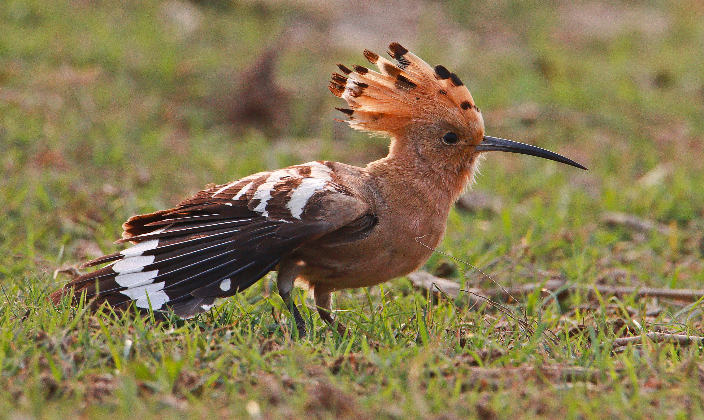

The Common Hoopoe is a distinctive bird with a long slender bill, boldly patterned black-and-white wings, a warm cinnamon body, and a prominent erectile crest. It usually forages on the ground, probing soil with its long bill for insects and other small prey. Hoopoes are often encountered in open landscapes and cultivated areas, where their striking appearance makes them easy to recognize. Compared with the similar Indian Roller, it is distinguished by the combination of features described above. Its preference for open woodland, farmland, grassland, gardens, and cultivated areas also helps separate it from species that use different habitats. Its characteristic behaviour, including forages mainly on the ground by probing soil and leaf litter with its bill, provides another useful field clue. Taken together, these differences make it easier to distinguish from similar species when the bird is seen clearly.